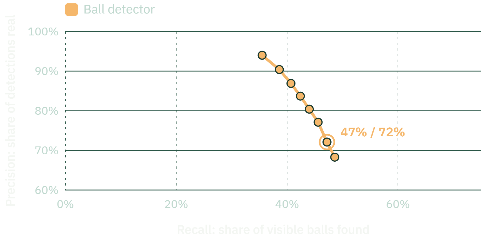

Backup · where it is weakest
Ball detection: precision against recall
Model: YOLOv8x ball detector. Threshold 0.05 lower right to 0.7 upper left; circled = 0.1

60%
of broadcast time shows a usable pitch view (22 halves, 47–70%)
64%
of that time the ball is located (range 47–80%)
1 of 26
tackles found end to end on unseen games
0.75×
video length to run the whole pipeline, on one RTX 3090
Ball: SoccerNet tracking test clips, 15 px match radius · coverage: 22 analysed halves · PitchProfile · AAI3001
32